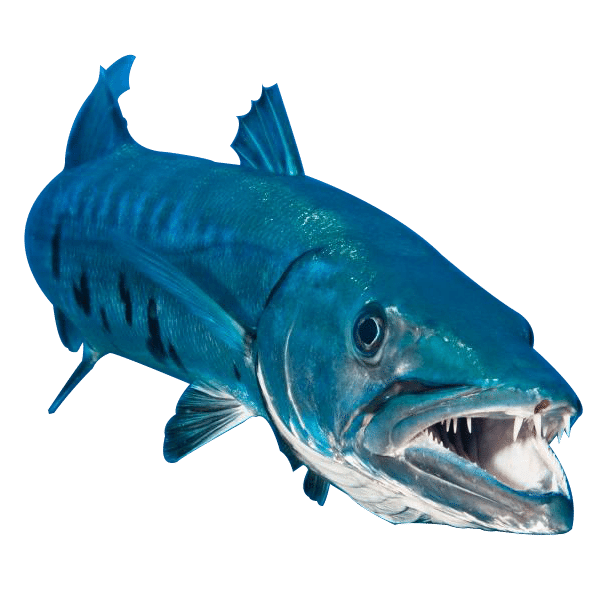

Marlin estava brincando de esconde-esconde com Nemo e Dory. porém, após encontrar Dory e procurar Nemo por um bom tempo, começou a se desesperar para encontrar Nemo com medo que ele tenha sido sequestrado novamente. Marlin e Dory vão em busca de Nemo e a primeira coisa que Dory vê é uma barracuda.
1 - Marlin e Dory nadam até a barracuda e perguntam se ela viu Nemo.
2 - NADA! NADA! NADA, DORY!